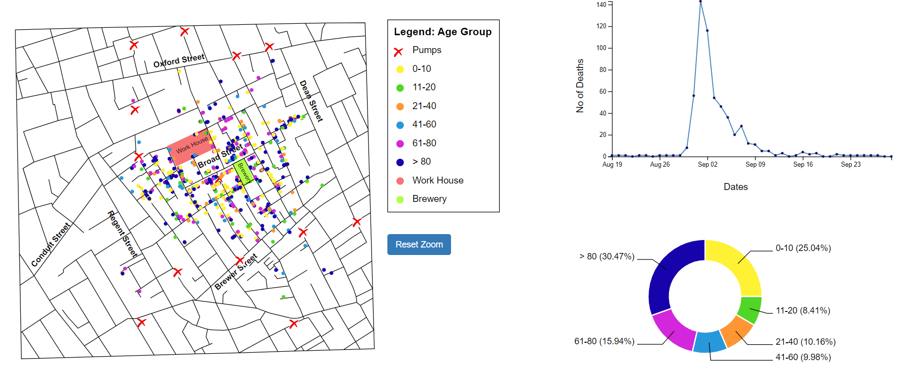

The design process for Dr. John Snow's map of London's 1854 cholera epidemic visulization is divided into 5 different parts:
1. Defining the purpose: The original visualization map consists of the locations and reported cases of cholera in the city, and showed a concentration of cases around a particular water pump on Broad Street. This led Dr. Snow to conclude that the water from the pump was contaminated and responsible for the outbreak. By recreating this visualization, my goal is that the end-user should be able to clearly understand the reason for deaths in a particular area of the city
2. Analyzing Data: After examining 4 data files and creating permutations and a combination of data, I understood that deaths are associated with either gender or age. The files also provided information about the days on which deaths occurred. Considering the context of the data, I made some choices of visualizations and the way the data should be presented.
3. Sketching the layout: Creating a rough sketch of a visualization helped me to visualize and plan out the design before creating it using coding. I created a rough sketch of how my visualization should look like. It included the main visualization map, distribution according to age and gender, legends for the map, a pie chart and a bar graph, A horizontal timeline graph, axes, and labels.
Fig 1
4. Prototyping: After understanding the data and possible visualizations, now it was time to dive in and start creating actual visualizations. This process involved several iterations of design, testing, and resketching the previous designs. While creating visualizations I identified potential issues and some areas for improvement.
5. Refining: To reach the final visualization, I had to make adjustments to various design elements such as color, typography, layout, chart types, or data representation. After getting several rounds of feedback, I wanted to improve and enhance the visualization design to make it more effective and engaging. The goal was to create a final visualization that effectively communicates the data and insights in a clear, concise, and engaging way.
Rationale of my design choices
1. Streets and Pumps:
Fig 2
Fig 3
Fig 2 shows the early stages of development. In this image, I have used black color to visualize the streets of the map. The black color gives the exact representation of the streets and lanes. I initially started with a pump image to show pump locations in the city, But these pumps were not very visible because of the solid black street strokes. Later I changed the pump image to a red cross to make it more visible between crowded streets. Fig 3 shows the perfectly plot streets and pumps which are visible. Pumps are detectable even after plotting deaths, major street names and locations. I have given the option to zoom in and zoom out of the map to see the number of deaths evidently.
Initially I thought of giving a checkbox for visualizing deaths according to both age and gender but it would have been difficult to understand the actual number of deaths when plotted together. That's why I resketched my idea and went with radio buttons instead.
2. Colors:
I have chosen blue color for males and pink color for females as these colors are mostly associated with these respective genders. It was important to use distinguishable colors according to the age groups. I have used the same colors consistently throughout visualization for these age groups. I have kept colors subtle and have chosen from a limited color palette as too many colors can be overwhelming and confusing. Approximately 8% of men and 0.5% of women have some form of colorblindness, So I tested my website for RGB colorblind people. I tested for Protanopia and Deuteranopia colorblindness and choose colors accordingly. Below figure shows website for Protanopia colorblind people.
Fig 4
3. Pie Chart:
Fig 5

Fig 6
Pie charts are a great way to show the proportion of different categories within a dataset. Each slice of the pie represents a category and the size of the slice corresponds to the proportion of the total that category represents. I choose pie charts to display the gender and age distribution of deaths because it's easy to compare the proportions of categories using a pie chart. They are generally understood by everyone, even people who are not familiar with data visualization. Initially, I thought of creating bar charts for deaths associated with age groups,(Fig 1) but later I decided to change it to a pie chart because it makes more sense to analyze the percentage of death of the age group than the numbers of death. Each slice has a color associated with that particular gender or age category. This makes it more engaging.
4. Line Chart:

Fig 7
Fig 8
Line charts are a popular visualization because they are effective in showing trends and changes in data over time. They are particularly useful for displaying data that changes over time. By making a line chart, it's easy to understand the number of deaths that happened every single day. I have also added a highlighting feature that highlights the number of deaths on the map for each day. This way it becomes easy for the user to see the trend of the deaths. As the length of the dataset increases, it becomes complicated to visualize data using a line chart, but it works well for this particular visualization.
Final Visulization
Fig 9

Fig 10
It is clear from the visualization that water from the pump near Broad Street was contaminated as most of the deaths can be seen concentrated around that water pump.
No particular gender is affected by cholera as the death percentages for both males and females are approximately similar.
Children (0-10 years) and Elders (>80 years) are mostly affected by the cholera epidemic. They have higher percentages of deaths.
Deaths because of this epidemic started rising on 30 Aug. The city saw the highest number of deaths on 1 Sep. After this date, the numbers started decreasing.
References
- https://d3js.org/
- https://d3-graph-gallery.com/
- https://jsfiddle.net/Iamnino/6aw9fjLq/39/
- https://matcha.fyi/zoom-scroll-tutorial/
- https://gist.github.com/mbostock/7882658
- http://www.rgblind.se/url
Youtube Video of visulization with narration
Youtube Video Link